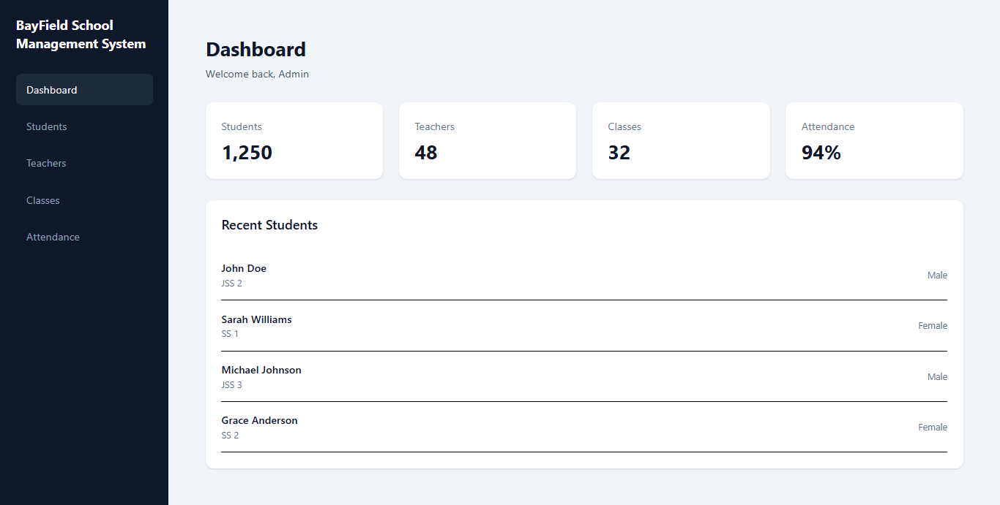
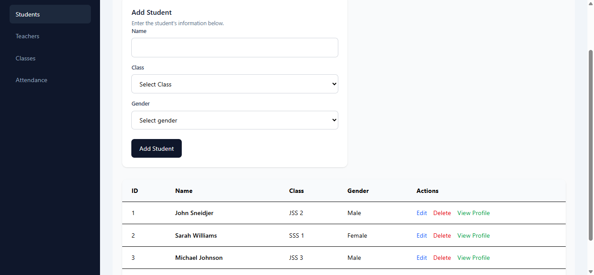
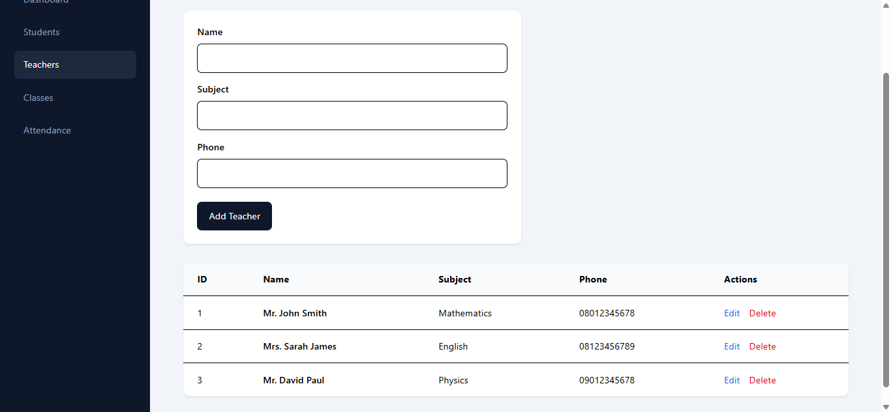
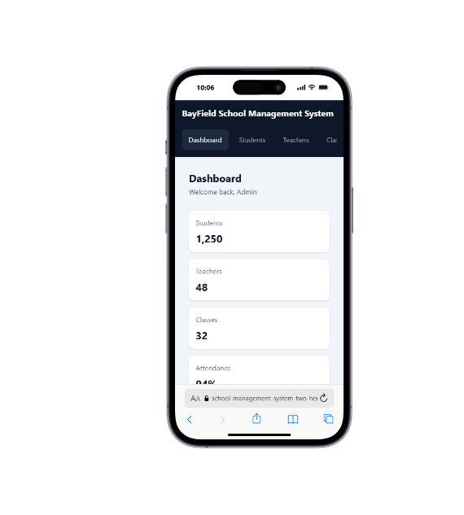

School management system
A frontend interface for managing school records: students, fees, assignments, classes and announcements.
- Tailwind CSS
- React




Overview
This is a personal project that focuses on the interface of a school management system. It covers the screens a school administrator would use day to day to keep records of the school community, designed to be clear and easy to use on desktop and mobile.
It is a frontend-only project: it has no backend or database. It is a portfolio project, not a delivered client engagement.
The business need
Schools handle a lot of information, such as students, classes and staff. When it lives on paper or in scattered files, it is slow to find and easy to get wrong. This project explores how a clean interface can make that information easier to view and manage.
The solution
A set of dashboard screens, forms and navigation designed around the tasks an administrator performs. I concentrated on layout, consistency and usability rather than on server-side logic.
From one place, an administrator can add, edit and delete student records, check which students have paid their fees, keep track of assignments and classes, and post announcements.
Key features
Student records
Add, edit and delete student records.
Fees tracking
Check which students have paid their fees.
Assignments
Keep track of assignments for students.
Classes
View and organize school classes.
Announcements
Post notices for the school community.
Responsive layout
Works on desktop, tablet and phone.
Technical implementation
- Front end React and Tailwind CSS.
- ScopeFrontend only. There is no backend, database or authentication in this project.
- LayoutResponsive across desktop, tablet and mobile.
My role
I designed and built the interface on my own, from layout and components to responsive behaviour.
Challenges and decisions
- Frontend-only scopeI limited this project to the interface, so the focus stays on layout, consistency and usability.
For a project with a real database, login and booking flow, see the Strivo case study.